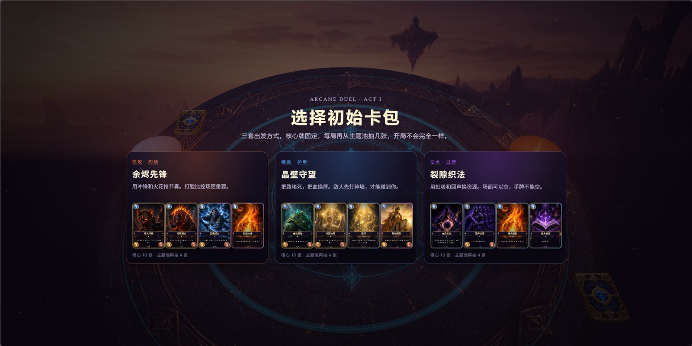
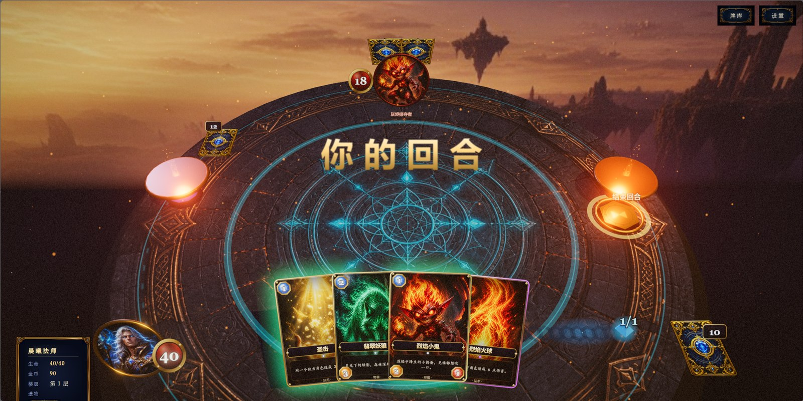
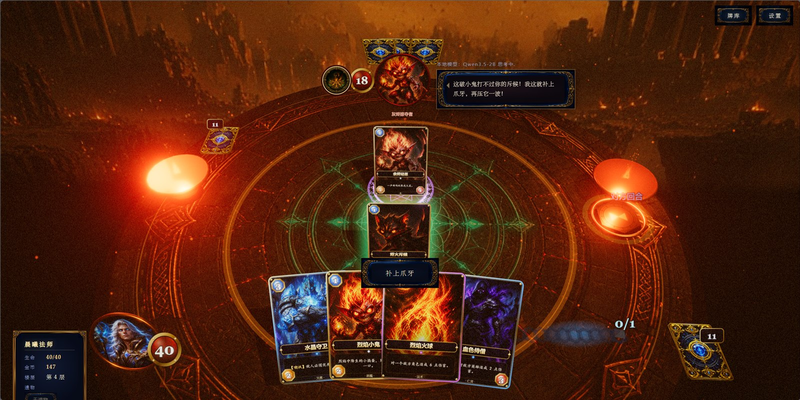
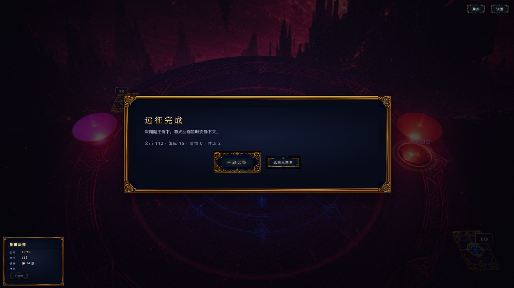

奥术对决 · 作品简介作品面貌
02 · 作品面貌
一局远征的完整路径






11 位有性格的对手 — 各有独立牌库、预兆表与人格档案
灰烬掠夺者普通 · 快攻急性子，催你出牌
水晶守望者普通 · 护甲沉稳，偶尔倒装
毒瘴术士普通 · 削弱带笑损人
战鼓蛮兵普通 · 强化大嗓门
虚空织法者中层 · 控制慢条斯理，会漏下一步
雷霆先锋中层 · 节奏干脆、语速快
暮刃刺客长精英 · 爆发轻声嘲讽
圣堂壁垒精英 · 铁壁短而稳，像立誓
腐化龙嗣精英 · 成长幼龙，句尾“咯咯”
伏击影魔事件 · 偷袭小声，从暗处探头
深渊魔王首领 · 三阶段傲慢，偶尔夹英文
奥术对决 · Arcane Duel